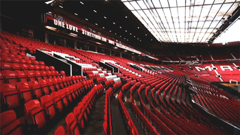

-
Old Trafford info
Old Trafford is a football stadium in Old Trafford, Greater Manchester, England, and the home of Manchester United. With a capacity of 74,879, it is the largest club football stadium (and second-largest football stadium overall after Wembley Stadium) in the United Kingdom, and the eleventh-largest in Europe.

Nicknamed "The Theatre of Dreams" by Bobby Charlton,[3] Old Trafford has been United's home ground since 1910, although from 1941 to 1949 the club shared Maine Road with local rivals Manchester City as a result of Second World War bomb damage. Old Trafford underwent several expansions in the 1990s and 2000s, including the addition of extra tiers to the North, West and East Stands, almost returning the stadium to its original capacity of 80,000.
